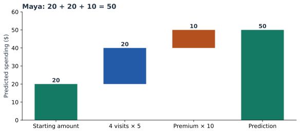

Explain a Linear Prediction by Hand
A linear model can explain a prediction through ordinary arithmetic. We will start with four customers, fit a small model, and follow every number into a prediction for a new customer, Maya. Later chapters will keep these customers while adding one idea at a time.
Start with four customers
Imagine a service that predicts next month’s spending from a customer’s visits in the previous month and their current plan. Here is our invented training data. The spending column is the amount actually observed in the following month.
| Customer | Visits | Plan | Observed ($) |
|---|---|---|---|
| Asha | 1 | Basic | 27 |
| Ben | 1 | Premium | 33 |
| Cara | 3 | Basic | 33 |
| Dev | 3 | Premium | 47 |
Names help us follow the rows; they are not model inputs. Encode Basic as 0 and Premium as 1. Our model will have a starting amount, an amount for each visit, and an additional amount for Premium:
+ visit amount × visits
+ Premium amount × Premium indicator.
The three amounts are the numbers we need to fit. A fitted linear regression gives us 20, 5, and 10, respectively. We will explain the fit below; first, use the resulting rule.
Calculate Maya’s prediction
Maya made four visits and has Premium. Her spending has not yet been observed. Substitute her two inputs into the fitted equation:
Here, $v$ means monthly visits, $p$ is the Premium indicator, and $\hat y$ is predicted spending. For Maya, $v=4$ and $p=1$.
| Part | Calculation | Amount ($) |
|---|---|---|
| Starting amount | 20 | 20 |
| Visits | 5 × 4 | 20 |
| Premium | 10 × 1 | 10 |
| Total | 20 + 20 + 10 | 50 |
We can now say: the model predicts 50 dollars, made up of a starting amount of 20, another 20 from four visits, and 10 from Premium. Nothing is hidden in that calculation.


Give the parts their usual names
The starting amount, 20, is the intercept. In this model it is the prediction for a Basic customer with zero visits. The visit amount, 5, and Premium amount, 10, are coefficients, also called weights.
A coefficient describes the rule. A contribution applies that rule to a particular row. The visits coefficient is always 5 in this fitted model; Maya’s visits contribution is 5 × 4 = 20. Cara’s is 5 × 3 = 15. Keeping those two ideas separate will make the later plots much easier to read.
The intercept is not the average customer’s prediction. Our four customers average two visits, and half have Premium. Their average prediction will be 35. We will use that average as a comparison point in Part 8.
Where did 20, 5, and 10 come from?
Linear regression chooses the three amounts to minimize the sum of squared errors on the training rows. An error is the observed amount minus the predicted amount. Squaring makes positive and negative errors contribute positively to the fitting objective.
| Customer | Observed | Predicted | Error |
|---|---|---|---|
| Asha | 27 | 25 | +2 |
| Ben | 33 | 35 | −2 |
| Cara | 33 | 35 | −2 |
| Dev | 47 | 45 | +2 |
There is also a quick way to see the fitted differences. The one-visit customers average (27 + 33) / 2 = 30. The three-visit customers average (33 + 47) / 2 = 40. That is 10 more dollars for two more visits, giving 5 per visit.
Basic customers average (27 + 33) / 2 = 30, while Premium customers average (33 + 47) / 2 = 40. Each group has the same average number of visits, so the plan difference is 10. The grand mean is 35; subtract 5 × 2 for average visits and 10 × 0.5 for the Premium share to obtain the intercept: 35 − 10 − 5 = 20.
This shortcut works because this tiny table balances the two inputs. A general dataset needs the regression fit to account for the inputs together. Here is that fit:
import numpy as np
from sklearn.linear_model import LinearRegression
# Columns: previous-month visits, Premium indicator.
X = np.array([[1, 0], [1, 1], [3, 0], [3, 1]])
y = np.array([27, 33, 33, 47])
model = LinearRegression().fit(X, y)
print(model.intercept_) # 20
print(model.coef_) # [5, 10]
print(model.predict([[4, 1]])) # [50]The errors also expose the model’s simplification: the observed Premium difference is 6 at one visit and 14 at three visits. This model uses one common plan difference, 10. We will later introduce an interaction to allow the plan difference to vary.
Change the inputs yourself
Move the visits slider or change the plan. Watch which term changes, then check the final sum. These controls use the fitted equation above.
With two visits and Basic, you should get 20 + 10 + 0 = 30. Selecting Premium adds 10. An additional visit adds 5. We are describing the model’s prediction rule; the actual future spending can differ, just as it did for our training customers.
Follow the series
The next chapter explains units and reference categories. After that, we will extend the equation, simplify its inputs, and turn its calculations into plots and plain-language explanations.
- Explain a Linear Prediction by Hand — Fit a spending model to four named customers, trace every contribution, and explain Maya’s prediction.
- What Regression Coefficients Actually Mean — Read units, reference categories, standardization, and uncertainty using the same fitted model.
- How Linear Models Learn Curves — Build squared terms and category indicators, combine related contributions, and recalculate transformed inputs correctly.
- When One Feature Changes Another Feature’s Effect — Calculate plan-dependent slopes, compare customers, and understand how centering changes coefficient meanings.
- Build Features People Can Understand — Turn event histories into clearly defined inputs and compare ratios, availability, stability, and usefulness.
- Simplify a Model by Grouping Similar Features — Standardize feature columns, follow Ward clustering, choose representatives, and verify held-out predictions.
- Read a Linear Model Through Its Plots — Build error, correlation, coefficient, contribution, and trend plots from visible numerical tables.
- From Linear Contributions to SHAP Values — Move from the intercept to a reference mean, derive linear SHAP by hand, and check it against the library.
- Explain One Prediction in Plain English — Answer questions about Maya, the reference population, and another customer with complete numerical explanations.
Run the complete example
Download linear_model_lab.py and requirements.txt into the same folder. With Python 3.12, run:
python -m venv .venv
source .venv/bin/activate
python -m pip install -r requirements.txt
python linear_model_lab.pyThe script fits the model, generates every figure, checks the clustering example, and compares the hand-derived SHAP values with both exhaustive reveal orders and SHAP’s implementation. The saved numerical results include package versions. Four rows keep the arithmetic visible; the later evaluation example uses separate rows.
Sources and worked examples
This chapter develops ideas from the lessons below in A Data Odyssey’s Explainable AI playlist. The customer data, calculations, figures, and interactive examples here are original teaching examples. The creator’s companion notebooks use different datasets.
- 8 Plots for Explaining Linear Regression — Conor O’Sullivan, A Data Odyssey.